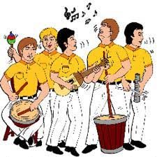
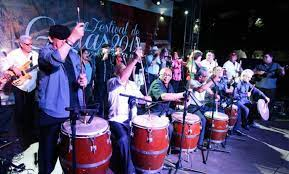
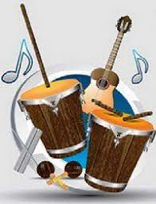

Gaitas

La gaita zuliana es un género musical del estado de Zulia en Venezuela; el concepto mal empleado de gaita se hizo para ganar popularidad, copiando el término de las gaitas iberoamericanas, pero sin ninguna similitud musical.
En 2014 fue declarado un bien patrimonial de interés cultural y artístico de Venezuela. En algunas regiones de Venezuela y en las comunidades de venezolanos alrededor del mundo se relaciona con la Navidad. Pero hoy en día es un género que se ejecuta todo el año en el país. Como género musical popular se canta en grupo formado por hombres y mujeres.
Los temas que tratan los intérpretes de este género van desde cantos al amor y figuras religiosas hasta temas jocosos.
Tal es la popularidad de este género musical que le dio nombre al equipo deportivo de baloncesto Gaiteros del Zulia.
Historia

En las primeras formas de gaita se conjugaron los cánticos de misa que enseñaban los misioneros católicos, la percusión de las tamboras, el característico sonido cultural del furruco, las maracas y la charrasca. El cuatro, junto a los cánticos españoles, representaban el aporte ibérico. La ejecución de los nativos aportaba el estilo definitivo a esta nueva música.
Los orígenes de la gaita zuliana no han sido establecidos con precisión, pero se supone que nació con las inquietudes republicanas del pueblo, tal vez en las primeras décadas del siglo XIX, como lo demuestran los patrióticos cantos pascuales dedicados a Ana María Campos, la patricia altagraciana azotada por orden del feroz mariscal Morales al negarse a retirar su frase lapidaria: «O capitula o monda».
Tradicionalmente la gaita ha estado vinculada a la devoción decembrina por Santa Lucía en el barrio El Empedrao de Maracaibo, y en este sentido se recuerda que cuando el Padre José Tomás Urdaneta tuvo a su cargo la parroquia, sacó del templo a los bulliciosos gaiteros. Puede decirse que desde entonces la gaita perdió su carácter religioso inicial y se convirtió definitivamente en música alegre y en expresión musical de crítica y protesta.
Instrumentos

Los Instrumentos que se utilizan para interpretar las gaitas son:
• Furro o Furruco: El furro o furruco está constituido por una caja de madera, cilíndrica y ligeramente cónica, con la abertura de diámetro menor dirigida hacia el piso. Al mismo tiempo está cubierta por una membrana de cuero seco, vibrante. Fijada convenientemente con tirantes metálicos, de modo de poder templarla de acuerdo a las necesidades y gusto del intérprete. En el centro de la membrana va fijada una espiga de madera, de poco más de un centímetro de diámetro y unos siete centímetros de longitud, cuyo extremo, romo, va engastado en el cuero y es atado fuertemente por el lado opuesto de la membrana.
• Maracas: Las maracas constituyen otro instrumento de la gaita. Se fabrican de un fruto llamado tapara, de forma ovalada, de diámetro variable, entre 10 o 12 cm. Huecas en su interior, donde se coloca una veintena de semillas del tamaño de lentejas, para producir el sonido. Por supuesto que ambas maracas poseen un mango apropiado para tomarlas el instrumentista.
• Cuatro Venezolano: es el instrumento cantante de la gaita zuliana, conjuntamente con las voces. Es un instrumento de cuerdas rasgueadas o percutidas. Semejante a una guitarra en su estructura, pero de menor tamaño.
• Charrasca: Es un instrumento metálico, de bronce, cilíndrico, dividido por una ranura en su eje longitudinal, y con estrías, más o menos profundas, perpendiculares a dicho eje, y labradas equidistantes de uno a otro extremo del cilindro.
• Tambora: De madera, de caja de forma cilíndrica y levemente cónica; abierta por el extremo inferior, lleva, semejante al furro, una membrana de cuero seco en la parte superior. Completamente estirado y liso, el cuero, es percutido por el ejecutante, quien usa dos baquetas de madera, de forma cilíndrica.